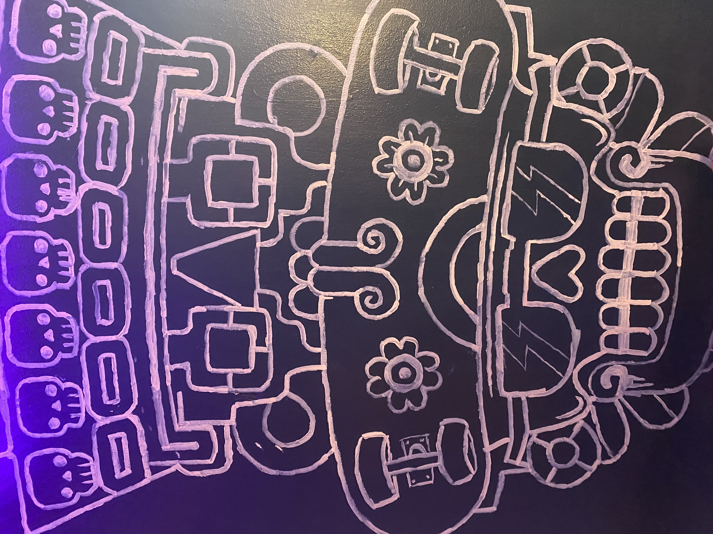
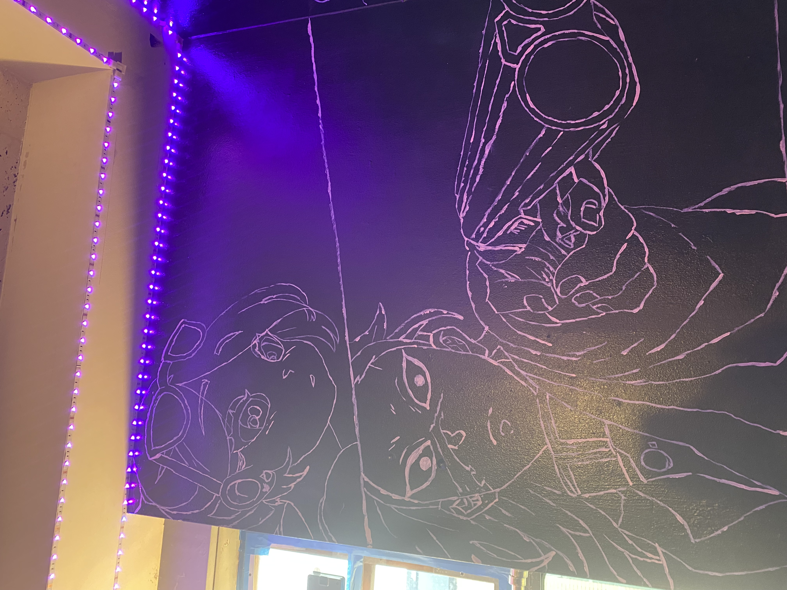
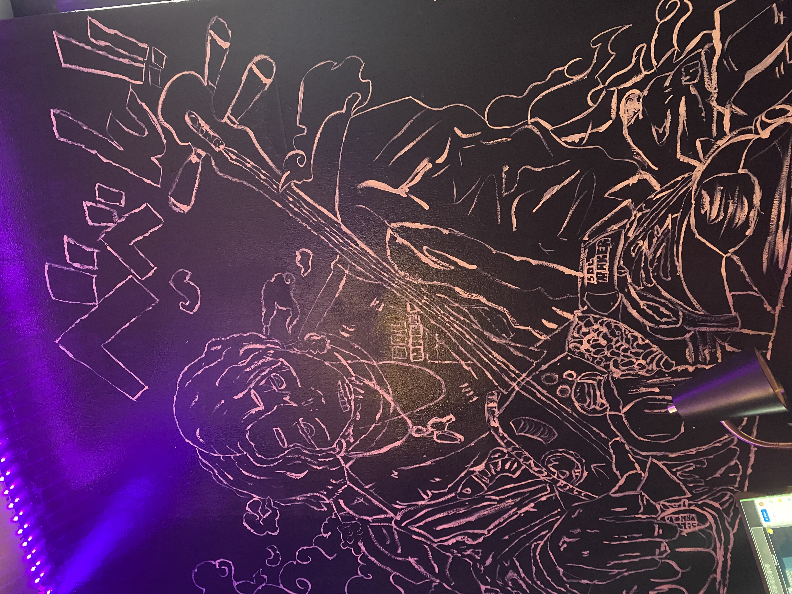
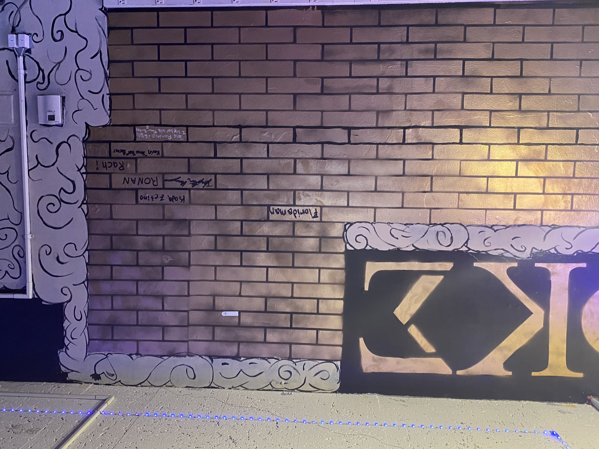

Chicago, IL | email: Pespinoza@hawk.iit.edu
   This past August I celebrated my 20th birthday with my family. My favorite thing is to draw and paint anything that captures my interest. My favorite way to paint is with a canvas and oil based paint, But since I'm in college and I don't have money I have been using a gallon of house paint that I found and so far it's been working pretty well. I'm practicing my wall murals. I wanna learn how to create smooth lines with a brush and not have to use spray paint.
.